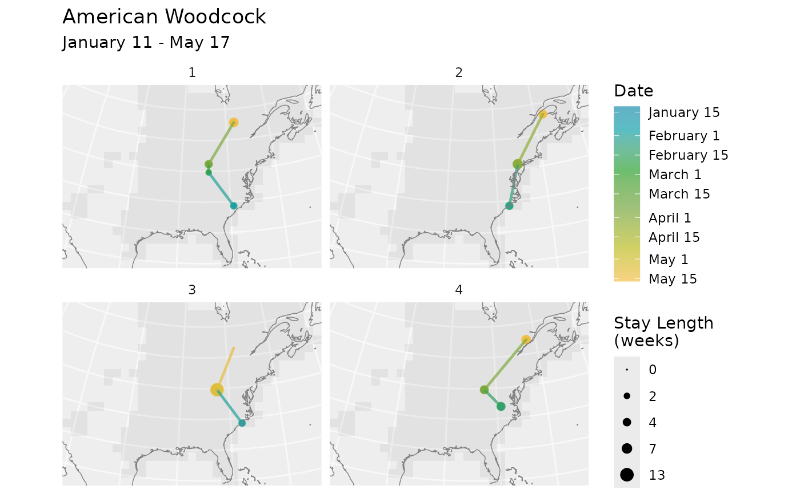
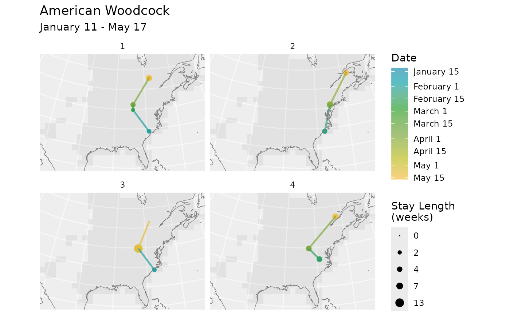

Plot routes as lines with color indicating the passage of time and dot size indicating the length of stay at each stop.
Arguments
- routes
The output of
route()or a similarly structured data frame.- bf, x
A BirdFlow object.
- facet
If
TRUEthen useggplot2::facet_wrap()to show each route out into a separate subplot.- max_stay_len
Used to scale the stay length dots. If
NULL(the default) it will be set to the maximum"stay_len"value inroutes. Set it manually to keep the dot scaling consistent across multiple plots.- use_seasonal_colors
If
TRUEa color scale that uses blues, greens, yellows, reds, for winter, spring, summer, and fall will be used with a consistent mapping of dates to colors regardless of the range of dates plotted. IfFALSEthen the data will be plotted using the full color scale.- pal
The color palette to use for plotting when
use_seasonal_colsisFALSE. Defaults to viridisLite::viridis(n = 5).- barheight
The height of the color gradient legend bar. Passed to
ggplot2::guide_colorbar()asbarheightargument. Depending on the output resolution and plot size this may need to be adjusted. Can take a number or the output fromggplot2::unit().- route_linewidth
Line width used for routes.
- dot_sizes
Two numbers indicating the smallest and largest dot sizes used to represent stay length.
- coast_linewidth
Line width used for coastlines.
- ...
Passed to
plot_routes()
Value
A ggplot object. Use print() to display it.
Details
plot.BirdFlowRoutes() calls plot_routes().
As of 6/13/2023 route() returns an object of class BirdFlowRoutes
that is a data frame with some extra attributes tacked on.
That route() returns a data frame like object that contains the data
formerly in the points component with columns as described here is, I think
finalized.
However, whether we keep it an S3 class and whether we keep the extra
attributes is experimental. If you want to be defensive and not use the
experimental aspects then call as.data.frame(rts) to convert to a standard
data.frame.
Examples
bf <- BirdFlowModels::amewoo
n <- 10
rts <- route(bf, n, season = "prebreeding")
# Multiple routes on one plot
plot_routes(rts, bf)
 # One panel per route
plot_routes(rts[rts$route_id %in% 1:4, ], bf, facet = TRUE)

# Returned plot object can be edited
# Here we change the title and add an additional sf
# layer with country boundaries
library(ggplot2)
p <- plot_routes(rts, bf) +
ggtitle(paste0(species(bf), " (with countries)")) +
geom_sf(data = get_countries(bf), inherit.aes = FALSE, fill = NA) +
coord_sf(expand = FALSE)
#> Coordinate system already present. Adding new coordinate system, which will
#> replace the existing one.
p
# One panel per route
plot_routes(rts[rts$route_id %in% 1:4, ], bf, facet = TRUE)

# Returned plot object can be edited
# Here we change the title and add an additional sf
# layer with country boundaries
library(ggplot2)
p <- plot_routes(rts, bf) +
ggtitle(paste0(species(bf), " (with countries)")) +
geom_sf(data = get_countries(bf), inherit.aes = FALSE, fill = NA) +
coord_sf(expand = FALSE)
#> Coordinate system already present. Adding new coordinate system, which will
#> replace the existing one.
p
 if (FALSE) {
# Use alternate color palettes
plot_routes(rts, bf, use_seasonal_colors = FALSE )
plot_routes(rts, bf, use_seasonal_colors = FALSE,
pal = c("red", "yellow", "blue"))
}
if (FALSE) {
# Use alternate color palettes
plot_routes(rts, bf, use_seasonal_colors = FALSE )
plot_routes(rts, bf, use_seasonal_colors = FALSE,
pal = c("red", "yellow", "blue"))
}